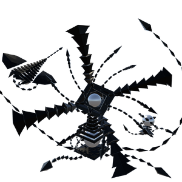

The Black Lily
背景

代码：BLACK LILY 报告
已在 鈻堚枅鈻堚枅/鈻堚枅鈻?鈻堚枅 的 鈻堚枅鈻堚枅 区域确认一名未识别实体。
该实体试图通过命令多个较小实体物种来控制周围环境，其方式类似蜂后指挥蜂群。
此外，实体及其仆从产生的物质被发现具有严重的心智腐蚀特性。报告显示，暴露者出现强烈困惑和幻觉，并常描述为“其他人的思绪混入了自己的思绪”。
附着在实体上的白色球状结构被指定为“Cores”。这些 Core 能够记录物质的信息构成并进行再现。
已确定这些 Core 允许该实体几乎无限量地生成仆从。因此，该实体影响并覆写周围环境的能力被评估为灾难级。发现后必须立即消灭。
策略
The Black Lily 是一个固定 Boss，可以在任意时刻召唤最多 3 个 Black Lily Token。它开局只有 2 种攻击；HP 降至 50% 后，会获得若干额外且更具毁灭性的招式，从可施加 decay 状态效果的水洼，到能伤害战场整整半边的大型激光都有。Black Lily 的许多攻击几乎没有提示，迫使对手同时密切注意它和它的仆从，否则很容易被打个措手不及。
统计
基础 HP：11000
该 Boss 不会离开生成点。
伤害：光耀和暗影
| 属性 | 抗性 |
|---|---|
| 物理 | 中性 (1x) |
| 火焰 | 弱点 (1.25x) |
| 冰霜 | 弱点 (1.25x) |
| 电击 | 中性 (1x) |
| 光耀 | 抗性 (0.25x) |
| 暗影 | 抗性 (0.25x) |
| 毒 | 中性 (1x) |